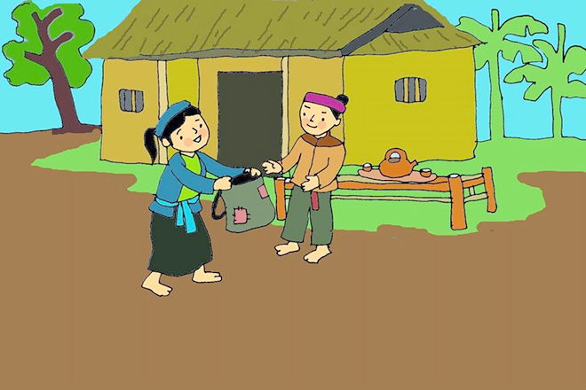

TRUYỆN CỔ TÍCH: "CÂY KHẾ"
Ngày đăng: 19/05/2024
Ngày xửa ngày xưa, nhà kia có hai anh em, cha mẹ mất sớm, đến khi người anh đi lấy vợ, vì không muốn sống cùng người em nên anh chia gia tài của cha mẹ để lại. Nhưng, khi chia gia tài, người anh lấy hết ruộng vườn, trâu cày, chỉ để lại cho người em túp lều nhỏ và mảnh vườn nhỏ, trong vườn có một cây khế ngọt. Người em được chia gia tài ít nhưng không phàn nàn, ngày ngày chăm chỉ làm lụng, đi cày thuê cuốc mướn để sống qua ngày.
Có một năm, cây khế trong vườn rất sai quả, chín vàng ngọt lịm. Người em rất vui mừng, dự tính sẽ bán khế để lấy tiền mua gạo. Nhưng, có con chim Phượng Hoàng từ đâu bay đến mổ khế ăn. Thấy vậy, người em đuổi chim và bảo:
-Này này, chú chim kia, ta chỉ có cây khế này thôi, ta khó nhọc chăm sóc nay sai quả mà chú ăn hết thì ta đâu còn khế đế bán mà mua gạo nữa. Nếu chú muốn ăn thì phải trả ta vật gì mới được!
Nghe xong, chim Phượng Hoàng bảo người em:
-Ăn một quả, trả cục vàng, may túi ba gang mang đi mà đựng.

Nghe chim nói vậy, người em đành để cho chim ăn khế. Mấy hôm sau, chim Phượng Hoàng lại đến ăn khế nữa. Ăn xong, chim bảo người em hãy lấy túi ba gang để đi lấy vàng. Nghe thế, người em liền chạy vào nhà, lấy túi ba gang đã may, leo lên lưng chim.
Chim Phượng Hoàng bay vút cao, qua núi rừng, biển rộng rồi đáp xuống một hòn đảo. Ở đó, vàng bạc châu báu rất nhiều. Người em thấy thế thích thú lắm vì chim giữ đúng lời hứa của mình. Sau khi đi một vòng ngắm đảo, người em lấy vàng bỏ đầy túi ba gang, dù chim Phượng Hoàng bảo lấy thêm nhưng người em cũng theo lời của chim lúc trước, chỉ lấy vàng đầy túi ba gang mà thôi. Xong đâu đấy, người em leo lên lưng Phượng Hoàng, chim lại cất cánh cao vút, qua biển rộng, núi đồi về nhà người em.
Từ mùa khế ấy, người em trở nên giàu có. Người em rất nhân hậu, mang vàng mình có mua lúa gạo chia cho người nghèo và giúp đỡ những người khổ sở.

Thấy em giàu có, người anh lại chơi nhà và đòi đổi ruộng vườn nhà cửa của mình lấy vườn của em có cây khế vàng kia. Người em cũng đồng ý. Năm sau, cây khế lại mùa nữa sai trĩu quả, chim Phượng Hoàng lại đến ăn. Người anh giả vờ khóc lóc, chim bảo:
-Ăn một quả trả cục vàng, may túi ba gang mang theo mà đựng.
Nghe vậy, người anh vui mừng hớn hở, giục vợ may túi thật to không phải 3 gang mà phải đến 12 gang để đựng được nhiều vàng. Ngày hôm sau, Phượng Hoàng lại đến ăn khế rồi chở người anh đi lấy vàng. Cũng đến hòn đảo nọ, người anh thấy vàng bạc châu báu thì lóa mắt, lấy cho đầy túi 12 gang của mình, còn lấy thêm bỏ vào trong người. Vàng nhiều nặng quá, Phượng Hoàng bay rất khó khăn nên bảo người anh hãy vứt bớt vàng đi cho nhẹ bớt nhưng người anh không chịu, cứ ôm khư khư túi vàng. Vì nặng quá và vì tức giận bởi sự tham làm của người anh, Phượng Hoàng nghiêng cánh và người anh cùng túi vàng rơi xuống biển, rồi Phượng Hoàng bay vút lên cao.
Cây khế là câu chuyện vô cùng quen thuộc với hầu hết chúng ta. Truyện nhắc nhở chúng ta phải biết giữ lời hứa của mình, biết chia sẻ với người khác, không tham lam và không dành mọi thứ về mình.